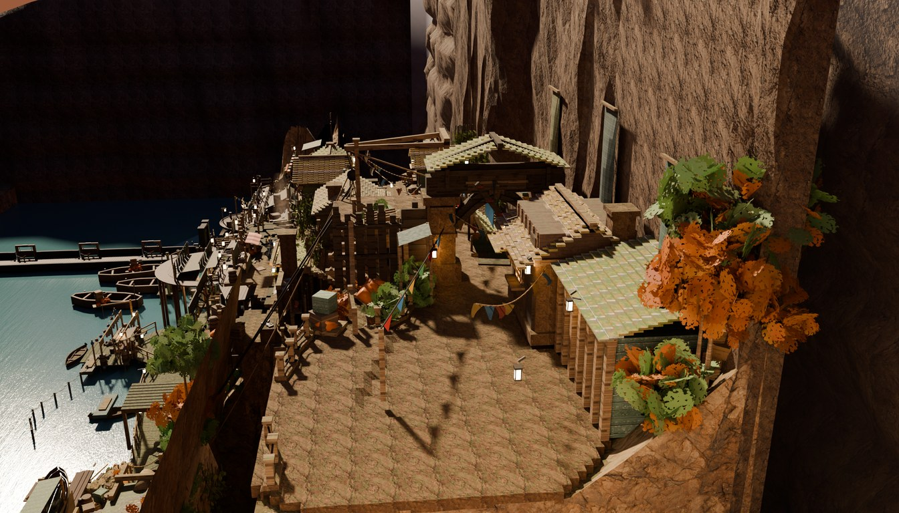
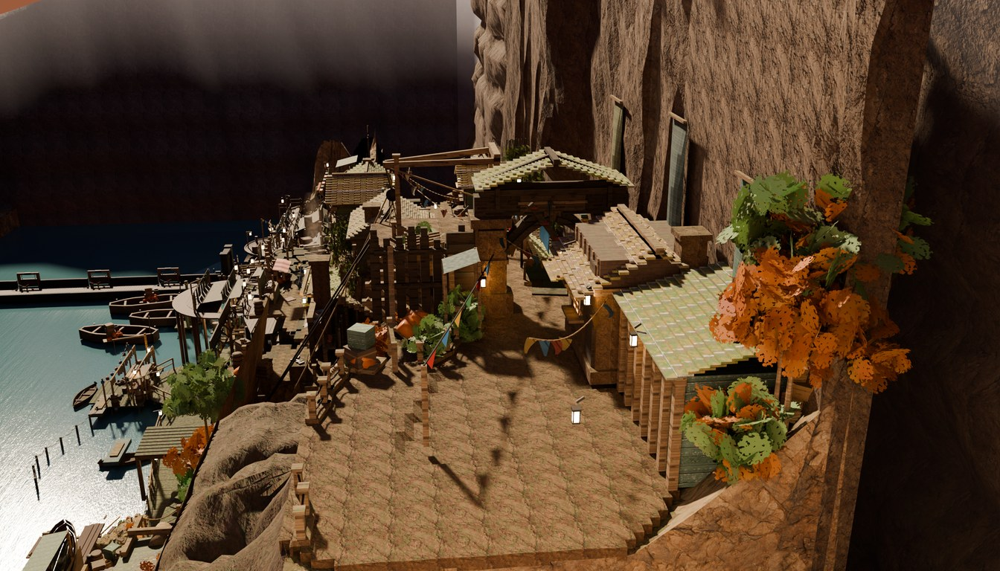
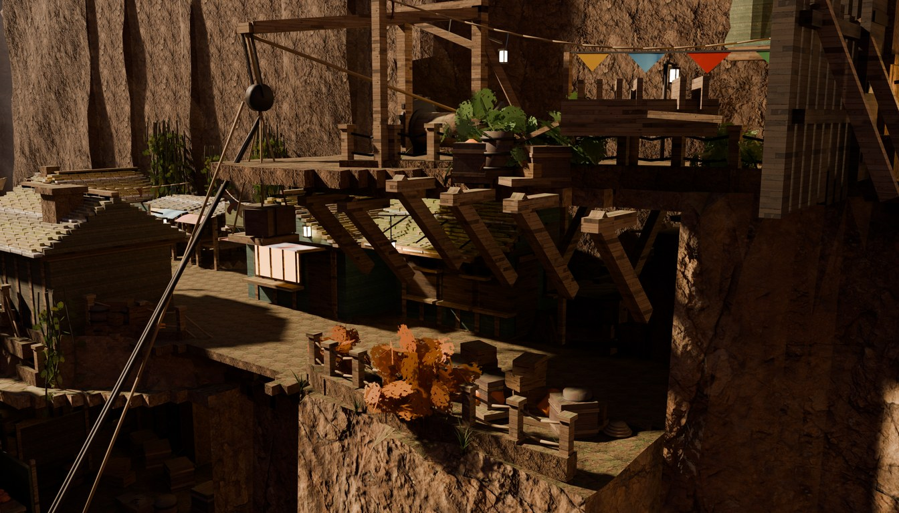
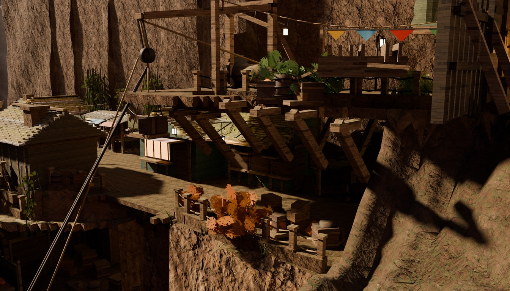

2026-08-02, GATE GORGE FRAME lane. Shipped plates, 2688×1536, 128 spp, the town's own grade. Before = the plate as it stood at 14:29; after = the re-bake.


What changed, said plainly. Two things, and they are at opposite ends of the frame's depth.
Bottom-left. In the before, the paved landing ends in a hard diagonal edge and below it is a near-black slab — a flat, featureless brown wall with a straight left edge — and then, immediately, the water. There is no ground between the town and the river; the tier just stops. In the after that slab is gone and in its place a rock shoulder rolls over the lip and falls away northward: a lit, creased, mossy bank with gullies and a talus toe that carries the eye down to the boatyard's own bank instead of dropping it into a hole. The landing's edge now reads as the top of a cliff rather than as the edge of a cut.
Top-left. In the before the upper-left quadrant is a large, hard-edged, pure-black region between the near cliff column and the water — the thing the user has twice called a gap in the cliff face. In the after it is a soft grey-brown graded haze receding upstream, with no hard edge and no black. The wall that was always there is now readable as a wall.
hide_render objects taken out of the depsgraph first:
cliff_east_closure is 65.86% of that quadrant and 16.46% of the whole
frame, standing at x 140.5..154.1, 125–170 m from the camera, at a plate luminance of
7.7 / 255. Present, correct, 2,205 verts — and unlit. Commit 73f4916 measured
that wall's sky leak falling 1.84% → 0.05%; that is a true number about a
different question.


This camera stands at (13.0, 22.3, 25.1) — north of the new face and barely above the tier — so it is the frame that pays for it. The timber galleries, the rope, the lanterns, the fence, the pot and the autumn foliage all still read; what changed is the bottom-right corner, which was a dark rock face over shadow and is now a continuous mossy slope. An earlier draft with the profile exponent at 0.62 buried the parapet and the understructure here; 0.45 is better in both frames, so that was a wrong first guess rather than a trade.
The redline has three parts. Part (2) — "replace that with a cliff that slopes down to the boatyard" — is what is shown above. Parts (1) and (3), the chop and bringing the railing in, are blocked on a genuine contradiction:
The blue line is at u = 0.4241 of frame width (plate column 1140 of 2688;
the annotation is a crop of the plate, registered at NCC 0.969, not a scaled copy,
so the straight multiply's 0.383 is wrong). It falls 108 px — 4.0% of frame width
— left of the stone arch pillar, exactly as the user described. Un-projected onto the
tier it is the near-constant line y ≈ 8.7. Measured off the shipped depth map,
the landing left of it is 5.93% of the frame — and 53.8% of those pixels stand on
the Porters' Yard's own 8×8 m walk pad. The cut would take 24 m² of that
64 m² pad. East of the yard there is almost nothing left to take: the rim already
reads 8.40 at x=13 and 7.10 at x=16 against a line at 8.87 and 8.80.
So "chop everything left of the blue line" is, in practice, "chop the Porters' Yard",
and the yard is under a standing ruling not to be cut. Two instructions collide. This lane
did not resolve it. When it is ruled, the edit is two lines — porters-yard's
extent in the map and the first two control points of
Terrain.rim() — and gate_rimchop.py carries it.